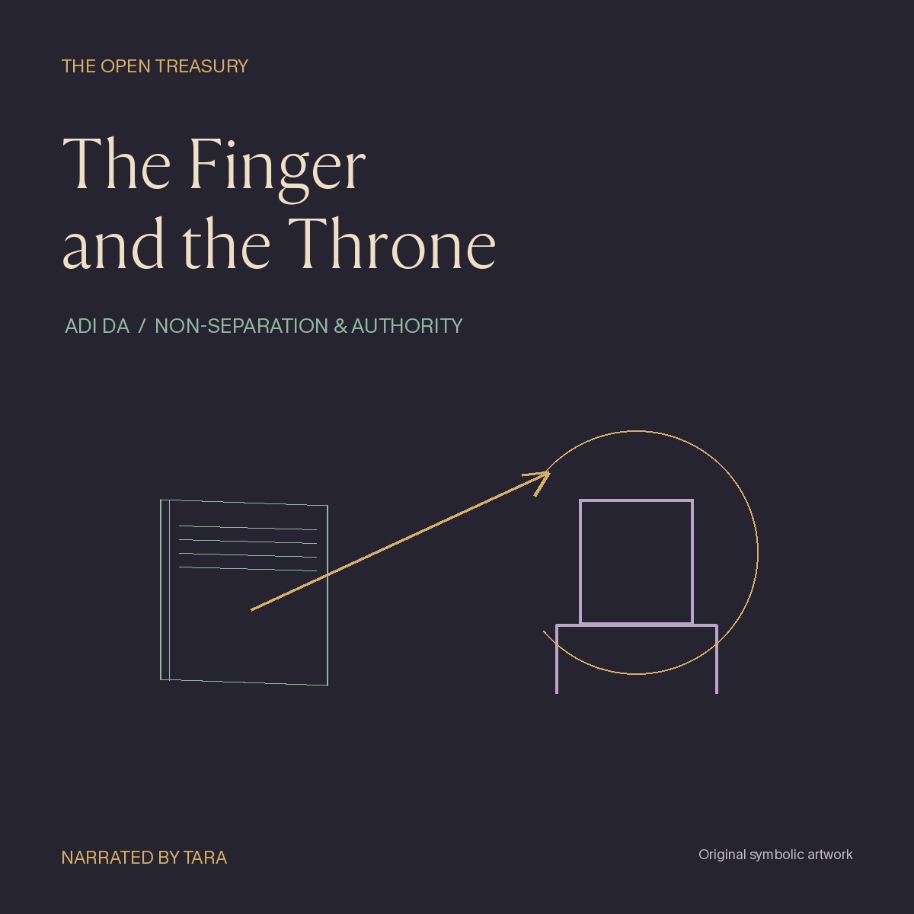

The Finger and the Throne
Adi Da, Non-Separation, and the Question of Authority
A 22-chapter, 53-minute original course on Adi Da: self-contraction, seeking, the seven stages, guru devotion, lineage, community and consent, allegations and denials, art, and the difference between insight and authority.
Moving visual edition
Watch or download the original 720p symbolic animation
Chapters
- 00:00 - The book on the table
- 02:29 - A life told in different registers
- 05:08 - A self made of activity
- 07:31 - The search that keeps its problem
- 10:05 - What the Heart means
- 12:20 - The question and the room
- 14:40 - Relationship instead of a technique
- 17:08 - The first three stages
- 19:31 - Devotion, ascent, and the witness
- 21:49 - The seventh that is not the next
- 24:09 - A letter and the size of a claim
- 26:30 - Not knowing and not checking
- 28:42 - The scholar who remembers the ashram
- 31:04 - The freedom to leave
- 33:21 - Allegations are not findings
- 35:48 - The strongest defense
- 38:22 - When endorsements become evidence
- 40:43 - A book that changes its own past
- 42:58 - The image that interrupts looking
- 45:18 - Prior unity and public life
- 47:47 - After the body of the teacher
- 50:12 - Keep the insight, keep the questions
Read alongside the course
Source companion PDF
Detailed sources and reading limits
Complete spoken script
Rights, narration and review
This is original educational commentary, not a reading of Adi Da's books, a devotional introduction, an authorized Adidam course, or a verdict from a court. The course distinguishes illuminating passages, personal experience, metaphysical explanation, and claims to exclusive authority. It explains the official teaching in its own terms without treating it as established clinical or scientific fact. It is not an initiation, practice prescription, therapy, or medical advice.
The four-part official Understanding presentation and both official Seven Stages pages were read. The former is a later published, devotionally framed presentation of a 1972 talk, not a transcript independently checked against original audio. Scholarly participant memoir, favorable expert testimony, contemporary reporting, advocacy transcriptions and the movement's defense retain their different roles. No claim of complete corpus access, original art viewing, authenticated court-disposition orders, present membership count, or an audit of current governance. Allegations are not findings; settlements and dismissals are not universal verdicts.
Narrated by Tara, an AI voice (Aoede). All 44 full original clips were compared with the manuscript using automated transcripts. Suspicious passages received independent full-clip or isolated checks. Clip 03 was replaced with a full fresh take after an added passage was detected. Clip 34 received a one-sentence, meaning-preserving text clarification to avoid an additions/editions homophone, then a complete fresh take. No individual words were patched into the recording. All 43 boundaries received transcript and signal review. This is not a claim of full human-ear listening or native-speaker pronunciation certification. Rare-name pronunciation and small delivery defects may remain.
The podcast is 52:41, 128 kbps MP3. Measured loudness: -17.6 LUFS, true peak -2.5 dBTP. Delivery processing is fixed gain and transparent peak limiting with verified technical-delay compensation. No speed, pitch or EQ changes. Untouched originals, unused takes, the whole-take master and lossless delivery audio are preserved privately.
The 720p, 8fps video has 22 original symbolic moving designs and the same course soundtrack. No Adi Da artwork, historical likeness, music, footage, or third-party recordings are reproduced. Actual encoded frames and motion from all chapters were checked, and the complete final video was decoded for errors. Chapter-card timing can trail the exact audio boundary by up to 1.5 seconds because of frame rounding; the soundtrack itself is continuous.
Original commentary, synthetic narration and original visual art are dedicated to CC0. This never extends to third-party sources, editions, trademarks or externally linked material. Public access is not republication permission. No third-party translation or extended source passage is read aloud. See the source companion for precise reading limits.
Free without ads, paid access, sponsorship or support solicitation.
Got a question? Ask Tara - the best listener questions become short answer episodes.